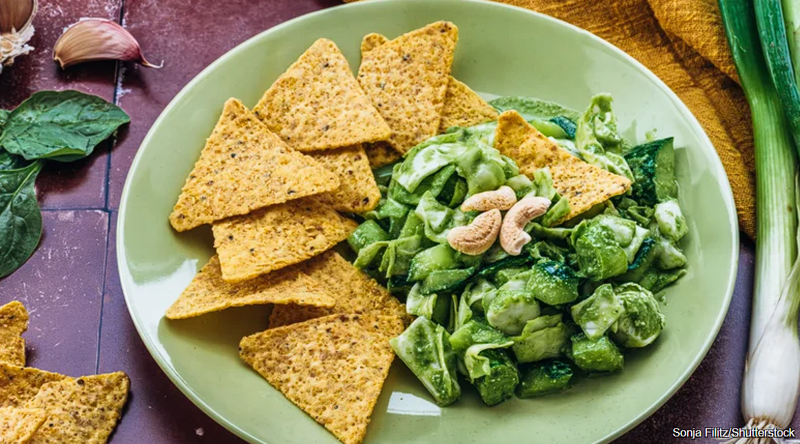

Hearty Italian Ribollita Soup Makes Good Use Of Stale Bread
Explore the rustic charm of ribollita, a quintessentially Tuscan soup that marries vegetables, beans, and crusty bread. A dish rich in history and flavor.
Drink
By Chelsea Jackle
TikTok Revamps Chicken Pot Pie With Red Lobster Biscuits
Simplify your weeknight dinner with TikTok's trending Chicken Pot Pie featuring Red Lobster Biscuits. A comforting one-pan meal that's both easy and delicious.

Kitchen
By Chelsea Jackle
TikTok's Green Goddess Salad Dip Makes Eating Your Vegetables Easy
Green Goddess Salad Dip, a viral TikTok trend, blends creamy, citrusy dressing with cabbage and herbs. See the recipe/variations for a fresh veg delight.